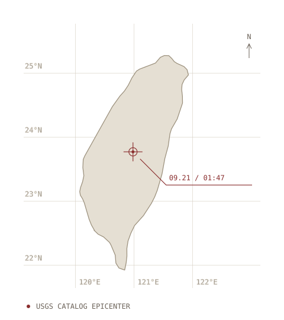

2026 / MODERN SEARCH & RESCUE
聯動守護災害搜救系統
LinkGuard — Disaster Search
and Rescue System
平時守護山林，災時搶救生命。
Guarding the forest in normal times, saving lives when disaster strikes.
TAIWAN · CHI-CHI EARTHQUAKE
921 集集大地震The 921 Chi-Chi earthquake
一次震動，
改變了台灣對災害的理解。One earthquake changed
Taiwan’s understanding of disaster.
而今天，
我們用科技重新思考
災害發生後的每一分鐘。Today, we use technology to rethink
every minute after disaster strikes.

USGS 目錄震央 · 台灣本島定位USGS catalog epicenter · Taiwan locator
地理參考，非震度圖。Geographic reference, not an intensity map.
USGS · Natural Earth
SENSE · CONNECT · RESPOND
ARCHIVE NOTE 01 / PROBLEM
01 / PROBLEM → SOLUTION
行動網路一旦中斷，搜救就先斷了線。When the mobile network goes down, the rescue loses its line first.
以 LoRa ESP32-S3 為核心的災害救援通訊系統。當災害摧毀行動網路， 以長距離無線電、穿戴式生理感測與本地端 AI，把受困者的生命徵象與環境資料送回指揮中心 —— 重新接起搜救人員與受困者之間的連結。一張網路，兩種模式。
A disaster rescue communication system built with LoRa ESP32-S3 as the core. When a disaster destroys mobile networks, long-range wireless, body sensors and on-device AI carry victims’ vital signs and environment data back to the command center — connecting rescuers and victims again. One network, two modes.
研究背景Research backgroundPAST → LESSON → TECHNOLOGY → FUTURE
記住過去，為下一次做好準備。Remember the past. Prepare for what comes next.
FIELD NOTE 02 / ENGINEERING
02 / HOW IT WORKS
感測、搜索、決策。Sense. Search. Decide.
SYSTEM OVERVIEW
- 01受困者Victim生理訊號Vital signs
- 02感測節點Sensor nodeLoRa ESP32-S3LoRa ESP32-S3
- 03LoRaLoRa長距離無線電Long-range radio
- 04指揮中心Command center本地端 AIOn-device AI
- 05搜救隊Rescue teamRescue RadarRescue Radar
SYSTEM RECORD 03 / LINKGUARD
04 / SYSTEM
兩種節點、三台載具。Two node types. Three vehicles.


EVIDENCE FILE 04
03 / EVIDENCE
從通訊測試，到搜救效率模擬。From link tests to rescue simulations.
抗干擾距離Range under interference
LoRa 通訊距離LoRa link distance
鹽水濃度下仍可解碼Salinity with packets still decoded
整體救援成功率Overall rescue success
紅燈傷患救援成功率提升Red-tag rescue success gain
等效樓層約 2.9 層，為概念性上界；模擬救援成功率不能直接套用到真實災害現場。The ≈2.9 equivalent floors are a conceptual upper bound; simulated rescue success cannot be applied directly to a real disaster.
RESEARCH RECORD 05 / FUTURE
05 / RESEARCH TEAM & AWARDS
LinkGuardLinkGuard
- No.
- —
- Project
- LinkGuard — 災害搜救系統LinkGuard — Disaster Search and Rescue System
- Team Name
- LinkGuard
- Members
- 葉柔昀、朱晢瑞、潘彥熏、朱映潼 YEH, JOU-YUN · CHU, JE-JUI · PAN, YAN-SYUN · CHU, YING-TONG